Integrity Rules and Constraints
قواعد السلامة والقيود
المتن الرئيسي
CREATE TABLE Customer
( CustID INTEGER PRIMARY KEY,
CustName CHAR(35) )
القيود (constraints) خاصية مهمة جدًا في النموذج العلائقي (relational model). وفي الواقع، يدعم النموذج العلائقي نظرية محددة المعاني للقيود على السمات أو الجداول. وتكون القيود مفيدة لأنها تتيح للمصمّم تحديد دلالات البيانات في قاعدة البيانات. والقيود هي القواعد التي تُجبر أنظمة إدارة قواعد البيانات (DBMS) على التحقق من أن البيانات تستوفي الدلالات.
CREATE TABLE Orders
( OrderID INTEGER PRIMARY KEY,
CustID INTEGER REFERENCES Customer(CustID),
OrderDate DATETIME )
سلامة النطاق (Domain integrity)
Key Terms
business rules: obtained from users when gathering requirements and are used to determine cardinality
cardinality: expresses the minimum and maximum number of entity occurrences associated with one occurrence of a related entity
connectivity: the relationship between two tables, e.g., one to one or one to many
constraints: the rules that force DBMSs to check that data satisfies the semantics
entity integrity: requires that every table have a primary key; neither the primary key, nor any part of it, can contain null values
identifying relationship: where the primary key contains the foreign key; indicated in an ERD by a solid line
integrity constraints: logical statements that state what data values are or are not allowed and which format is suitable for an attribute
mandatory relationship:one entity occurrence requires a corresponding entity occurrence.
non-identifying relationship: does not contain the foreign key in the primary key; indicated in an ERD by a dotted line
optional relationship: the FK can be null or the parent table does not need to have a corresponding child table occurrence
orphan record: a record whose foreign key value is not found in the corresponding entity – the entity where the primary key is located
referential integrity: requires that a foreign key must have a matching primary key or it must be null
relational database management system (RDBMS): a popular database system based on the relational model introduced by E. F. Codd of IBM’s San Jose Research Laboratory
relationship type: the type of relationship between two tables in an ERD (either identifying or non-identifying); this relationship is indicated by a line drawn between the two tables.
يقيد النطاق (domain) قيم السمات في العلاقة، وهو قيد في النموذج العلائقي. غير أن هناك دلالات واقعية للبيانات لا يمكن تحديدها إذا استُخدمت القيود الخاصة بالنطاق وحده. فنحن بحاجة إلى طرق أكثر تحديدًا لبيان قيم البيانات المسموح بها أو غير المسموح بها، ولبيان الصيغة المناسبة لسمة ما. فمثلًا، يجب أن يكون معرّف الموظف (Employee ID - EID) فريدًا، أو أن يكون تاريخ ميلاد الموظف (Birthdate) في المدى [Jan 1, 1950, Jan 1, 2000]. وتُقدَّم هذه المعلومات في عبارات منطقية تُسمّى قيود السلامة (integrity constraints).
Exercises
Read the following description and then answer questions 1-5 at the end.
The swim club database in Figure 9.17 has been designed to hold information about students who are enrolled in swim classes. The following information is stored: students, enrollment, swim classes, pools where classes are held, instructors for the classes, and various levels of swim classes. Use Figure 9.17 to answer questions 1 to 5.
IMAGE16END Figure 9.17. ERD for questions 1-5. (Diagram by A. Watt.)
وتوجد عدة أنواع من قيود السلامة، وهي موصوفة أدناه.
سلامة الكيان (Entity integrity)
لضمان سلامة الكيان (entity integrity)، يلزم أن يكون لكل جدول مفتاح أساسي (primary key). ولا يمكن أن يحتوي المفتاح الأساسي ولا أي جزء منه على قيم NULL. والسبب في ذلك أن قيم NULL في المفتاح الأساسي تعني أننا لا نستطيع تحديد بعض الصفوف. فمثلًا، في الجدول EMPLOYEE لا يمكن أن يكون Phone مفتاحًا أساسيًا لأن بعض الأشخاص قد لا يكون لديهم هاتف.
السلامة المرجعية (Referential integrity)
تتطلب السلامة المرجعية (referential integrity) أن يكون للمفتاح الأجنبي (foreign key) مفتاح أساسي مطابق أو أن يكون NULL. وقد خُصِّص هذا القيد بين جدولين (الجدول الأصل والجدول الابن)؛ وهو يحافظ على التوافق بين الصفوف في هذين الجدولين. أي أن الإشارة من صف في جدول إلى جدول آخر يجب أن تكون صحيحة.
ومن أمثلة قيد السلامة المرجعية في قاعدة بيانات Customer/Order الخاصة بالشركة ما يلي:
- Customer(CustID, CustName)
- Order(OrderID, CustID, OrderDate)
ولضمان عدم وجود سجلات يتيمة، نحتاج إلى فرض السلامة المرجعية. والسجل اليتيم (orphan record) هو السجل الذي لا يُعثر فيه على قيمة مفتاحه الأجنبي (FK) في الكيان المقابل، أي الكيان الذي يوجد فيه المفتاح الأساسي. وتذكّر أن الربط (join) النموذجي يكون بين مفتاح أساسي ومفتاح أجنبي.
ينص قيد السلامة المرجعية على أن معرّف العميل (CustID) في جدول Order يجب أن يطابق قيمة CustID صحيحة في جدول Customer. ومعظم قواعد البيانات العلائقية تملك سلامة مرجعية تصريحية (declarative referential integrity). وبعبارة أخرى، تُعدَّ قيود السلامة المرجعية عند إنشاء الجداول.
وهذا مثال آخر من قاعدة بيانات Course/Class:
- Course(CrsCode, DeptCode, Description)
- Class(CrsCode, Section, ClassTime)
ينص قيد السلامة المرجعية على أن CrsCode في جدول Class يجب أن يطابق قيمة CrsCode صحيحة في جدول Course. وفي هذه الحالة، لا يكفي أن يكون CrsCode وSection في جدول Class هما المفتاح الأساسي، بل يجب أيضًا فرض السلامة المرجعية.
وعند ضبط السلامة المرجعية، من المهم أن يكون للمفتاح الأساسي والمفتاح الأجنبي نوعا البيانات نفسه ويأتي من النطاق نفسه، وإلا فلن يسمح نظام إدارة قواعد البيانات العلائقية (relational database management system - RDBMS) بإجراء الربط. وRDBMS هو نظام قواعد بيانات شهير قائم على النموذج العلائقي الذي قدّمه E. F. Codd من مختبر أبحاث IBM في سان خوسيه. وأنظمة قواعد البيانات العلائقية أسهل في الاستخدام والفهم من أنظمة قواعد البيانات الأخرى.
السلامة المرجعية في Microsoft Access
في Microsoft (MS) Access، تُضبط السلامة المرجعية عبر ربط المفتاح الأساسي في جدول Customer بـ CustID في جدول Order. انظر الشكل 9.1 لتعرف كيف يتم ذلك في شاشة Edit Relationships في MS Access.
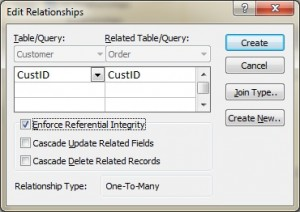
السلامة المرجعية باستخدام Transact-SQL (MS SQL Server)
عند استخدام Transact-SQL، تُضبط السلامة المرجعية عند إنشاء جدول Order مع المفتاح الأجنبي. وفيما يلي العبارات التي تُظهر المفتاح الأجنبي في جدول Order وهو يشير إلى المفتاح الأساسي في جدول Customer.
CREATE TABLE Customer ( CustID INTEGER PRIMARY KEY, CustName CHAR(35) ) CREATE TABLE Orders ( OrderID INTEGER PRIMARY KEY, CustID INTEGER REFERENCES Customer(CustID), OrderDate DATETIME )
قواعد المفتاح الأجنبي
يمكن إضافة قواعد إضافية للمفتاح الأجنبي عند ضبط السلامة المرجعية، مثل ما يجب فعله بالصفوف الابنة (في جدول Orders) عند حذف السجل الذي يحمل المفتاح الأساسي، وهو جزء من الجدول الأصل (Customer)، أو عند تغييره (تحديثه). فمثلًا، تعرض نافذة Edit Relationships في MS Access (انظر الشكل 9.1) خيارين إضافيين لقواعد المفتاح الأجنبي: Cascade Update وCascade Delete. وإذا لم يُختر هذان الخياران، فسيمنع النظام حذف قيم المفتاح الأساسي أو تحديثها في الجدول الأصل (جدول Customer) إذا كان هناك سجل ابن. والسجل الابن هو أي سجل له مفتاح أساسي مطابق.
وفي بعض قواعد البيانات، يوجد خيار إضافي عند اختيار خيار Delete ويُسمّى Set to Null. وإذا تم اختيار هذا الخيار، يُحذف صف المفتاح الأساسي، لكن يُضبط المفتاح الأجنبي في الجدول الابن على NULL. ورغم أن هذا يُنشئ صفًا يتيمًا، إلا أنه مقبول.
قيود المؤسسة (Enterprise Constraints)
قيود المؤسسة (enterprise constraints)، وتُشار أحيانًا إلى القيود الدلالية (semantic constraints)، هي قواعد إضافية يحدّدها المستخدمون أو مسؤولو قواعد البيانات، وقد تستند إلى جداول متعددة.
وفيما يلي بعض الأمثلة.
- يمكن أن يضم الصف (class) عددًا أقصى من 30 طالبًا.
- يمكن للمعلّم أن يُدرّس أربعة مقررات كحد أقصى في كل فصل دراسي.
- لا يمكن لموظف أن يشارك في أكثر من خمسة مشاريع.
- لا يمكن أن يتجاوز راتب الموظف راتب مديره.
قواعد الأعمال (Business Rules)
تُجمع قواعد الأعمال (business rules) من المستخدمين عند جمع المتطلبات. وعملية جمع المتطلبات مهمة جدًا، وينبغي التحقق من نتائجها من قبل المستخدم قبل بناء تصميم قاعدة البيانات. وإذا كانت قواعد الأعمال غير صحيحة، فسيكون التصميم غير صحيح، وفي النهاية لن يعمل التطبيق المبني على النحو الذي يتوقعه المستخدمون.
ومن أمثلة قواعد الأعمال ما يلي:
- يمكن للمعلّم أن يُدرّس طلابًا كثيرين.
- يمكن أن يضم الصف (class) عددًا أقصى من 35 طالبًا.
- يمكن أن يُدرَّس المقرر مرات كثيرة، لكن من قِبل مُدرِّس واحد فقط.
- ليس جميع المعلّمين يدرّسون مقررات.
التعددية (Cardinality) والاتصالية (connectivity)
تُستخدم قواعد الأعمال لتحديد التعددية (cardinality) والاتصالية (connectivity). وتصف التعددية العلاقة بين جدولين من جداول البيانات عبر التعبير عن الحد الأدنى والأقصى لعدد مرات ظهور الكيانات (entity) المرتبطة بظهور كيان مرتبط واحد. وفي الشكل 9.2، يمكنك أن ترى أن التعددية ممثَّلة بالعلامات الأعمق داخل رمز العلاقة. وفي هذا الشكل، تكون التعددية 0 (صفر) على اليمين و1 (واحد) على اليسار.
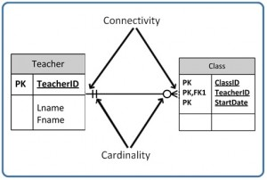
أما الرمز الخارجي لرمز العلاقة، فيمثّل الاتصالية بين الجدولين. والاتصالية هي العلاقة بين جدولين، مثل واحد إلى واحد (one-to-one) أو واحد إلى متعدد (one-to-many). والوقت الوحيد الذي تكون فيه صفرًا هو عندما يمكن أن يكون المفتاح الأجنبي (FK) قيمة NULL. وفيما يتعلق بالمشاركة (participation)، توجد ثلاثة خيارات للعلاقة بين هذه الكيانات: إما 0 (صفر) أو 1 (واحد) أو متعدد (many). وفي الشكل 9.2، على سبيل المثال، تكون الاتصالية 1 (واحد) على الجانب الخارجي الأيسر من هذا الخط، ومتعدد على الجانب الخارجي الأيمن.
ويوضح الشكل 9.3 الرمز الذي يمثّل علاقة واحد إلى متعدد.
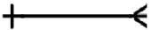
وفي الشكل 9.4، تظهر كلتا العلامتين: الداخلية (التي تمثّل التعددية) والخارجية (التي تمثّل الاتصالية). ويُقرأ الجانب الأيسر من هذا الرمز على أنه: أدنى 1 وأقصى 1. أما الجانب الأيمن فيُقرأ على أنه: أدنى 1 وأقصى متعدد.
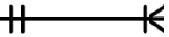
أنواع العلاقات
يبيّن الخط الذي يصل بين جدولين في مخطط ERD نوع العلاقة بين الجدولين: إما علاقة محدِّدة للهوية (identifying) أو علاقة غير محدِّدة للهوية (non-identifying). وللعلاقة المحدِّدة للهوية خط متصل (حيث يحتوي المفتاح الأساسي على المفتاح الأجنبي). أما العلاقة غير المحدِّدة للهوية فيُشار إليها بخط متقطع، ولا يحتوي المفتاح الأساسي فيها على المفتاح الأجنبي. راجع القسم في الفصل 8 الذي يتناول العلاقات الضعيفة والقوية لمزيد من الشرح.
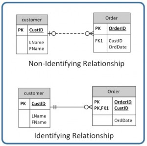
العلاقات الاختيارية (Optional relationships)
في العلاقة الاختيارية (optional relationship)، يمكن أن يكون المفتاح الأجنبي (FK) قيمة NULL، أو لا يحتاج الجدول الأصل إلى أن يحتوي على ظهور مقابل في جدول الابن. ويوضّح الرمز المبيّن في الشكل 9.6 نوعًا واحدًا فيه صفر وثلاثة أسنان (أي معنى متعدد) أي معناه صفر أو متعدد.

فمثلًا، إذا نظرت إلى جدول Order في الجانب الأيمن من الشكل 9.7، فستلاحظ أن العميل لا يحتاج إلى تقديم طلب ليكون عميلًا. وبعبارة أخرى، فإن جانب المتعدد اختياري.
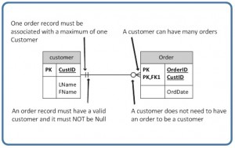
ويمكن قراءة رمز العلاقة في الشكل 9.7 على النحو التالي:
- الجانب الأيسر: يجب أن يحتوي كيان الطلب على كيان مرتبط واحد على الأقل في جدول Customer، وكيان مرتبط واحد كحد أقصى.
- الجانب الأيمن: يمكن للعميل تقديم عدد من الطلبات يتراوح بين صفر كحد أدنى ومتعدد كحد أقصى.
ويوضح الشكل 9.8 نوعًا آخر من رموز العلاقات الاختيارية، وفيه صفر وواحد، أي بمعنى صفر أو واحد. وجانب الواحد اختياري.
ويقدّم الشكل 9.9 مثالًا على كيفية استخدام رمز من صفر إلى واحد.
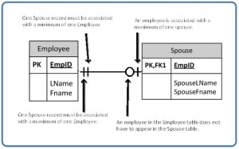
العلاقات الإلزامية (Mandatory relationships)
في العلاقة الإلزامية (mandatory relationship)، يتطلب ظهور الكيان الواحد وجود كيان مقابل. ويبيّن رمز هذه العلاقة واحدًا فقط كما هو موضّح في الشكل 9.10. وجانب الواحد إلزامي.
انظر الشكل 9.11 لمثال على كيفية استخدام رمز «واحد فقط» الإلزامي.
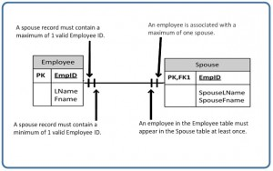
ويوضّح الشكل 9.12 شكل رمز علاقة واحد إلى متعدد، حيث يكون جانب المتعدد إلزاميًا.
ارجع إلى الشكل 9.13 لمثال على كيفية استخدام رمز واحد إلى متعدد.
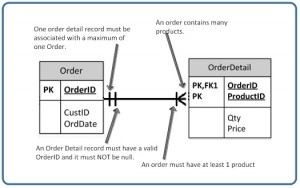
لقد رأينا حتى الآن أن الجانب الأعمق من رمز العلاقة (على الجانب الأيسر من الرمز في الشكل 9.14) يمكن أن تكون له تعددية (cardinality) قدرها 0 (صفر) واتصالية (connectivity) قدرها متعدد (معروضة على الجانب الأيمن من الرمز في الشكل 9.14)، أو واحد (غير معروض).
غير أنه لا يمكن أن تكون له اتصالية قدرها 0 (صفر)، كما هو معروض في الشكل 9.15. ولا يمكن أن تكون الاتصالية سوى 1.
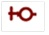
تُظهر رموز الاتصالية الحدود الأقصى. فإذا فكّرت في الأمر من الناحية المنطقية، فإن رمز الاتصالية إذا كان على الجانب الأيسر يعرض 0 (صفر)، فلا توجد علاقة بين الجدولين.
وفيما يلي طريقة قراءة رمز العلاقة، مثل الرمز الموجود في الشكل 9.16.
- يجب أيضًا أن يُعثر على CustID في جدول Order في جدول Customer عددًا من المرات لا يقل عن صفر ولا يزيد عن مرة واحدة.
- تعني الـ 0 أن CustID في جدول Order يمكن أن يكون قيمة NULL.
- والرقم 1 في أقصى اليسار (قبل 0 مباشرة التي تمثّل الاتصالية) يعني أن CustID في جدول Order، إن وُجد، فلا يكون إلا مرة واحدة في جدول Customer.
- وعندما ترى رمز 0 الخاص بالتعددية، يمكنك أن تفترض أمرين: أن المفتاح الأجنبي في جدول Order يسمح بقيم NULL، وأن
- المفتاح الأجنبي ليس جزءًا من المفتاح الأساسي، لأن المفاتيح الأساسية لا يجوز أن تحتوي على قيم NULL.
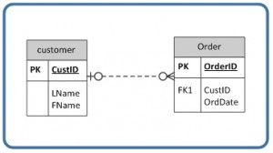
قواعد الأعمال (business rules): تُجمع من المستخدمين عند جمع المتطلبات، وتُستخدم لتحديد التعددية (cardinality)
التعددية (cardinality): تعبّر عن الحد الأدنى والأقصى لعدد مرات ظهور الكيانات المرتبطة بظهور كيان مرتبط واحد
الاتصالية (connectivity): العلاقة بين جدولين، مثل واحد إلى واحد أو واحد إلى متعدد
القيود (constraints): القواعد التي تُجبر أنظمة إدارة قواعد البيانات (DBMS) على التحقق من أن البيانات تستوفي الدلالات
سلامة الكيان (entity integrity): تتطلب أن يكون لكل جدول مفتاح أساسي؛ ولا يمكن أن يحتوي المفتاح الأساسي ولا أي جزء منه على قيم NULL
العلاقة المحدِّدة للهوية (identifying relationship): التي يحتوي فيها المفتاح الأساسي على المفتاح الأجنبي؛ ويُشار إليها في مخطط ERD بخط متصل
قيود السلامة (integrity constraints): عبارات منطقية تحدّد قيم البيانات المسموح بها أو غير المسموح بها، والصيغة المناسبة للسمة
العلاقة الإلزامية (mandatory relationship): ظهور الكيان الواحد يتطلب وجود كيان مقابل.
العلاقة غير المحدِّدة للهوية (non-identifying relationship): لا يحتوي فيها المفتاح الأساسي على المفتاح الأجنبي؛ ويُشار إليها في مخطط ERD بخط منقّط
العلاقة الاختيارية (optional relationship): يمكن أن يكون المفتاح الأجنبي (FK) قيمة NULL، أو لا يحتاج الجدول الأصل إلى أن يحتوي على ظهور مقابل في جدول الابن
السجل اليتيم (orphan record): سجل لا يُعثر فيه على قيمة مفتاحه الأجنبي في الكيان المقابل، أي الكيان الذي يوجد فيه المفتاح الأساسي
السلامة المرجعية (referential integrity): تتطلب أن يكون للمفتاح الأجنبي مفتاح أساسي مطابق أو أن يكون NULL
نظام إدارة قواعد البيانات العلائقية (relational database management system - RDBMS): نظام قواعد بيانات شهير قائم على النموذج العلائقي الذي قدّمه E. F. Codd من مختبر أبحاث IBM في سان خوسيه
نوع العلاقة (relationship type): نوع العلاقة بين جدولين في مخطط ERD (إما محدِّدة للهوية أو غير محدِّدة للهوية)؛ وتشير هذه العلاقة إلى خط مرسوم بين الجدولين. اقرأ الوصف التالي ثم أجب عن الأسئلة من 1 إلى 5 في نهاية القسم.
صُمِّمت قاعدة بيانات نادي السباحة في الشكل 9.17 للاحتفاظ بمعلومات عن الطلاب المسجّلين في مقررات السباحة. وتُخزَّن فيه المعلومات التالية: الطلاب، والتسجيل، ومقررات السباحة، وأحواض السباحة التي تُعقد فيها المقررات، والمدرّسون المعنيون بالمقررات، ومستويات مقررات السباحة المختلفة. استخدم الشكل 9.17 للإجابة عن الأسئلة من 1 إلى 5.
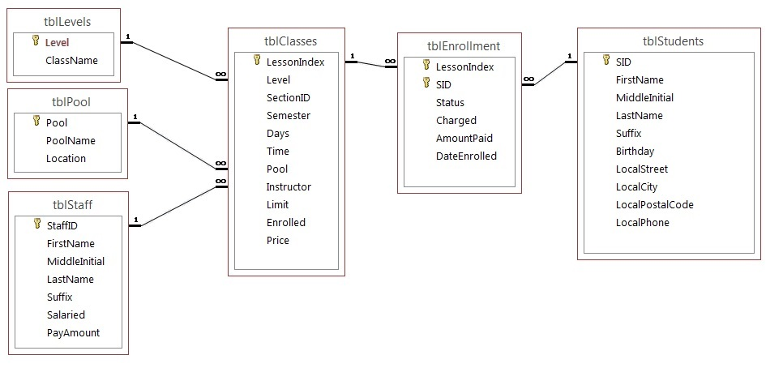
تم تحديد المفاتيح الأساسية أدناه. وقد خُصِّصت أنواع البيانات التالية في SQL Server.
tblLevels Level – Identity PK ClassName – text 20 – nulls are not allowed
tblPool Pool – Identity PK PoolName – text 20 – nulls are not allowed Location – text 30
tblStaff StaffID – Identity PK FirstName – text 20 MiddleInitial – text 3 LastName – text 30 Suffix – text 3 Salaried – Bit PayAmount – money
tblClasses LessonIndex – Identity PK Level – Integer FK SectionID – Integer Semester – TinyInt Days – text 20 Time – datetime (formatted for time) Pool – Integer FK Instructor – Integer FK Limit – TinyInt Enrolled – TinyInt Price – money
tblEnrollment LessonIndex – Integer FK SID – Integer FK (LessonIndex and SID) Primary Key Status – text 30 Charged – bit AmountPaid – money DateEnrolled – datetime
tblStudents SID – Identity PK FirstName – text 20 MiddleInitial – text 3 LastName – text 30 Suffix – text 3 Birthday – datetime LocalStreet – text 30 LocalCity – text 20 LocalPostalCode – text 6 LocalPhone – text 10
نفّذ هذا المخطط (schema) في SQL Server أو access (وستحتاج إلى اختيار أنواع بيانات مماثلة). وسلّم لقطة شاشة لمخطط ERD الخاص بك في قاعدة البيانات.
- اشرح قواعد العلاقة لكل علاقة (مثل: tblEnrollment وtblStudents: يمكن للطالب أن يسجّل في مقررات كثيرة).
- حدّد التعددية (cardinality) لكل علاقة، بافتراض القواعد التالية: قد يكون للحوض مقررات أو قد لا يكون له أي مقررات.
- يجب أن يكون جدول المستويات مرتبطًا دائمًا بمقرر واحد على الأقل.
- قد يكون جدول الموظفين قد درّس مقررات أو قد لا يكون قد درّس أيًا منها.
- يجب أن يكون جميع الطلاب مسجّلين في مقرر واحد على الأقل.
- يجب أن يكون في المقرر طلاب مسجّلون.
- يجب أن يكون للمقرر حوض صالح.
- قد لا يكون للمقرر مُدرِّب مُسند إليه.
- يجب أن يكون المقرر مرتبطًا دائمًا بمستوى موجود.
- ما الجداول الضعيفة وما الجداول القوية (تمت تغطيتها في فصل سابق)؟
- ما الجداول غير المحدَّدة للهوية وما الجداول المحدَّدة للهوية؟
إسناد الصور (Image Attributions)
الأشكال 9.3 و9.4 و9.6 و9.8 و9.10 و9.12 و9.14 و9.15 من إعداد A. Watt.